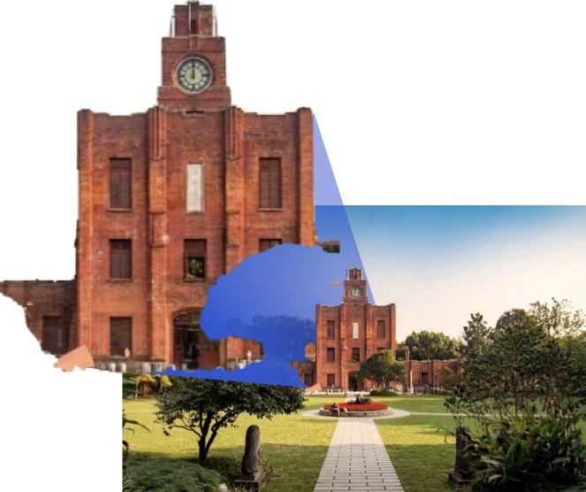
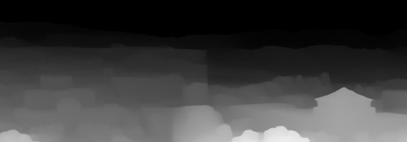
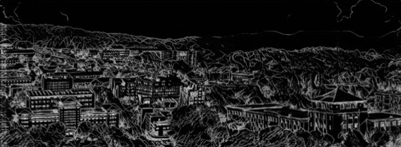
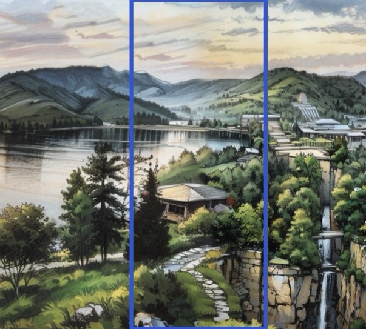

多风格艺术长卷 · 全流程工作流
网络素材 → 底图拼接 → ComfyUI 风格化 → 拼接精修 → 风格化长卷
01 素材采集
选景规划
浙大8校区、新西湖十景、宁波景点；按面积/年代/游览动线排布
网络搜图 + 抠图
按经典机位搜集建筑与风景图，抠出主体

素材抠图
02 底图预拼接
PS 预拼接
在 Photoshop 中排定位置，对齐视角与地平线
接缝过渡
仿制图章/模糊画笔初衔接；建筑遮挡过渡；WebUI 局部重绘补缝
局部重绘蒙版
03 ComfyUI 风格化（风格学习 → CN控制 → 生成 → 精修）
WD14 反推提示词
从风格参考图中提取提示词
IPAdapter 风格迁移
SDXL 下迁移参考图的风格与构图
ControlNet 双控
深度 + 线稿双控，锁住建筑结构


K采样器 & VAE解码
DreamShaper XL Turbo 初次出图
FLUX 精修
UNET 去噪增强细节 → ESRGAN 超分高清
参数调整与排障
采样步数 5–8 · 双 CN 控制
变形→加CN 风格弱→调权重
噪点→重抽卡 / 换参考图
04 拼接精修
PS 衔接 + 局部重绘
仿制图章/模糊画笔初衔接；同一 Lora 局部重绘接缝
单独生成 + 人工PS
修复风格化后脱离特征的局部

接缝重绘
输入 · PS 拼接底图
输出 · 风格化长卷